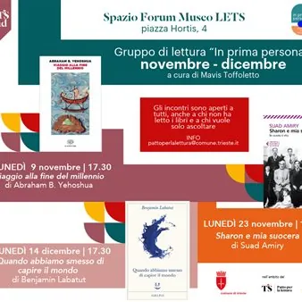

da lun 9 nov a lun 14 dic · dalle 17:30
In prima persona. Gli appuntamenti di novembre e dicembre 2026
lunedì 9 novembre ore 17.30 Viaggio alla fine del millennio di Abraham B. Yehoshua È l’anno 999. Ben Attar, mercante ebreo di Tangeri, parte per mare verso l’Europa cristiana. Con lui viaggiano le sue due mogli, il socio arabo Abu Lutfi e un rabbino di Siviglia. Deve…
 Indicazioni
Indicazioni
- Costi e prenotazioni
- Costo non indicato · Prenotazione non indicata
- Programma
- Programma da verificare. Apri la fonte ufficiale per orari e possibili aggiornamenti.
- In caso di maltempo
- Nessuna indicazione specifica pubblicata.
- Note
- Acquisito automaticamente dalla fonte.
L’EVENTO
Descrizione completa
lunedì 9 novembre ore 17.30
Viaggio alla fine del millennio di Abraham B. Yehoshua È l’anno 999. Ben Attar, mercante ebreo di Tangeri, parte per mare verso l’Europa cristiana. Con lui viaggiano le sue due mogli, il socio arabo Abu Lutfi e un rabbino di Siviglia. Deve riconquistare il favore del nipote Raphael, che si è stabilito a Parigi. La nuova moglie del nipote, ebrea ashkenazita, considera inaccettabile la bigamia dello zio, e da questa ripulsa nasce un vero processo, discusso nelle comunità del Reno. Dietro la vicenda, ricostruita con grande precisione storica, c’è l’incontro difficile tra due mondi ebraici, quello mediterraneo e quello del Nord Europa. Il romanzo interroga la legge, la tolleranza e il diritto di chi giudica i costumi degli altri. L’autore: Abraham B. Yehoshua (Gerusalemme 1936 – Tel Aviv 2022) è stato uno dei maggiori scrittori israeliani, accanto ad Amos Oz e David Grossman, e una voce costante nel dibattito civile del suo paese. lunedì 23 novembre ore 17.30
Sharon e mia suocera di Suad Amiry Ramallah, tra il 2001 e il 2002. Durante l’occupazione militare israeliana e il coprifuoco, Suad Amiry tiene un diario. Vi annota le code ai checkpoint, le notti sotto assedio e le telefonate con gli amici. In casa si è trasferita la suocera novantaduenne, e la convivenza forzata con lei si rivela più logorante dei carri armati in strada. Ne nasce un racconto pieno di ironia, a tratti esilarante, che mostra la vita quotidiana sotto occupazione senza retorica e senza vittimismo. Il comico diventa qui una forma di resistenza e di dignità. L’autrice: Suad Amiry, nata a Damasco nel 1951 da famiglia palestinese, è architetta e vive a Ramallah. Ha fondato il centro Riwaq per la tutela del patrimonio architettonico palestinese. Sharon e mia suocera è il suo primo libro, tradotto in molte lingue e premiato in Italia con il Premio Viareggio. lunedì 14 dicembre ore 17.30
Quando abbiamo smesso di capire il mondo di Benjamín Labatut Il libro racconta l’evoluzione del pensiero scientifico nel Novecento. In quegli anni la fisica e la matematica hanno scardinato la realtà come la conoscevamo e ci hanno portato verso l’atomo, la meccanica quantistica e l’orrore tecnologico. Labatut segue le vite, al confine tra genio e follia, degli uomini che hanno reso possibile tutto questo. Tra loro c’è Fritz Haber, il chimico che salvò il mondo dalla fame con i fertilizzanti e lo condannò con i gas tossici. Ci sono anche Heisenberg e Schrödinger. L’autore entra nelle loro menti febbricitanti per mostrare il prezzo umano e spirituale pagato per “capire il mondo”. È un libro inclassificabile, a metà tra romanzo, biografia e saggio narrativo. L’autore: Benjamín Labatut, nato a Rotterdam nel 1980, è uno scrittore cileno. Quando abbiamo smesso di capire il mondo (Adelphi, 2021) ha ottenuto grande attenzione dalla critica internazionale ed è stato finalista all’International Booker Prize.
IL PROGRAMMA
Programma e orari
Appuntamenti raccolti dalle fonti elencate. Dove manca un orario, non è ancora disponibile in questa scheda.
Programma pubblicato
- Dal 2026-11-09 al 2026-12-14
INFORMAZIONI UTILI
Prima di partire
- Controllare la fonte prima di partire.
ORGANIZZAZIONE